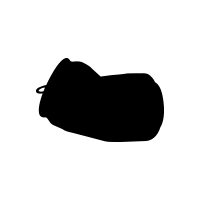
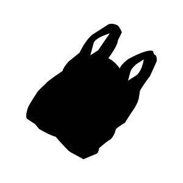
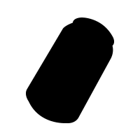
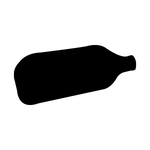
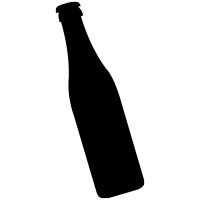
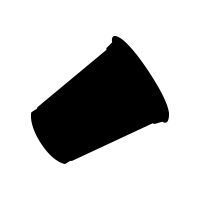
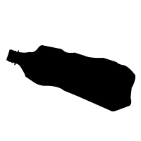
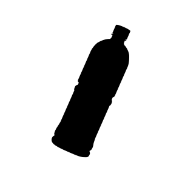
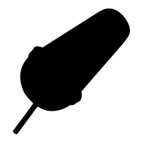
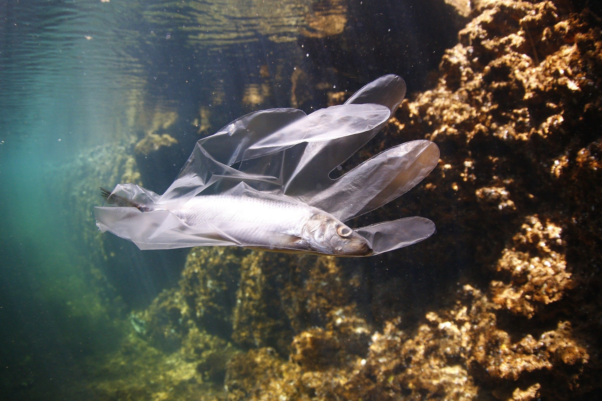

제로웨이스트가 무엇인가요?
"제로웨이스트 (Zerowaste):
제품, 포장 및 재료의 책임 있는 생산, 소비, 재사용 및 회수를 통해 모든 자원을 태우지
않고, 환경이나 인간의 건강을 위협하는 땅, 물 또는 공기로 배출하지 않고 보존합니다."
ZWIA(Zero Waste International Alliance)에서는 제로웨이스트를 위와 같이 정의합니다.
[Zero Waste International Alliance]

왜 제로웨이스트를 실천해야 하나요?
플라스틱은 생태계, 특히 바다를 더럽히는 직접적인 요인입니다.
1년에 해양에 유입되는 플라스틱 쓰레기는 480만 ~ 1,270만 톤으로 해양 생태계로 흘러가는 쓰레기의 60~80%가 플라스틱입니다. 이러한 속도라면 2050년에는 바다에 물고기보다 플라스틱이 더 많아질 수 있다는 예측이 나오고 있습니다.
생태원에서는 2017년부터 바다거북 사체 중 상태가 양호한 것을 대상으로 부검해오고 있는데, 미세 플라스틱을 포함하면 지금까지 부검한 40여 마리 모두에서 플라스틱이 나왔습니다. 플라스틱이 직접적인 사인이 된 것도 여러 마리였습니다.
한국은 매년 한 사람이 130kg 이상의 플라스틱을 사용합니다. 세계 평균이 50kg 정도라는 사실을 고려하면 거의 세 배에 가깝습니다. 서구권에서 많이 쓴다는 미국도 93kg 정도 입니다.
류지현, 조충연. "미세플라스틱 현황과 인체에 미치는 영향" 공업화학전망22, no.2 (2019)
환경부 자료[스테파노스 호티우(ESCAP 환경개발국장)]
환경부 [국립 생태원 소속 이혜림 수의사]
어떻게 제로웨이스트를 실천할 수 있을까요?
제로웨이스트 실천가인 '비 존슨(Bea Johnson)'은 제로웨이스트 실천을 위해 5R 단계를 제시합니다.
1단계 거절하기(Refuse)는 장을 보거나 배달 음식을 주문할 때, 카페 등에서 비닐, 빨대, 일회용 젓가락 등 필요 없는 물건을 거절하는 것입니다.
2단계는 줄이기(Reduce)입니다. 물건을 구매할 때 필요한 것만 골라 물건 수를 줄이고, 비닐이나 유리, 플라스틱에 포장되지 않은 제품을 골라 포장 쓰레기를 줄일 수 있습니다. 사용하지 않거나 필요하지 않은 물건을 중고로 판매하거나 기부를 통해 다른 사람이 사용할 수 있도록 합니다. 이 줄이기 과정을 통해 생활에 꼭 필요한 물건을 간추릴 수 있습니다.
3단계는 재사용(Reuse)입니다. 일회용품을 다회 사용하는 방법이 있고, 아예 재사용이 가능한 물건으로 바꾸는 방법이 있습니다. 기존의 아이스팩이나 배달 용기를 깨끗하게 씻어서 다시 사용하거나, 일회용 화장솜을 대나무 섬유로 만들어져 자연분해 되는 다회용 화장솜으로 바꿔 사용할 수 있습니다. 장을 볼 때 비닐 봉투 대신 천주머니를 이용하는 것도 재사용 습관입니다.
4단계 재활용(Recycle)은 거절하거나 줄이거나 혹은 재사용하지 못한 물건을 다시 사용하는 것입니다.
5단계는 부패(Rot)입니다. 채소나 과일 껍질뿐만 아니라 자연분해 포장지로 포장된 제품을 구매해 이를 썩히는 것까지 하는 단계입니다. 국내에서는 최근 스타벅스 등에서 이러한 자연 분해 포장지 제품을 찾아볼 수 있습니다.
[그린포스트코리아(http://www.greenpostkorea.co.kr)]
어떻게 제로웨이스트를 실천할 수 있을까요?
플라스틱 칫솔 대신 대나무 칫솔, 튜브 치약 대신에 고체 치약, 샴푸 대신 샴푸바를 사용하는 등 제로 웨이스트를 실천할 수 있는 대체 용품들이 등장했습니다.
플라스틱 용기 없이 내용물만 g당 판매하는 리필스테이션도 등장했습니다. 바디워시, 샴푸, 섬유 유연제 같은 제품을 용기에 원하는 만큼만 채워 구매할 수 있습니다. 리필 가격은 대부분 본품 가격 대비 절반 정도입니다. 리필스테이션을 이용해 한 번 리필하면 생수병 3개만큼의 플라스틱을, 600ml의 물을, 25시간동안 전구를 켤 수 있는 에너지를 절약할 수 있다고 합니다.
[출처: (중앙일보) 이마트, 아모레퍼시픽…대기업도 뛰어든 리필 스테이션 가보니]
실생활 속 제로웨이스트 실천하기
1. 텀블러(개인컵), 다회용 컵 사용 생활화 하기
2. 장 볼 때는 장바구니(에코백) 사용하기
3. 음식 포장 시 다회용기에 담아가기
4. 음식 배달 주문 시 안 쓰는 플라스틱 거절하기
5. 플라스틱 빨대, 젓는 막대 사용 줄이기
6. 음료 구입 시 무라벨 제품 우선 구매하기
7. 온라인 상품 주문은 모아서 한꺼번에 하기
8. 과도하게 포장된 제품 소비 줄이기
9. 포장 안 한 상품 등 구매하기
10. 세탁 비닐 등 불필요한 비닐 사용 줄이기
환경부에서는 위와 같은 실천 방법을 제시합니다.
환경부 [플라스틱 다이어트, 함께해요.]
실생활 속 제로웨이스트 실천하기
재활용을 위해 올바른 분리배출을 실천해야 합니다.
폐페트병은 내용물을 비우고, 라벨을 제거하고, 찌그러트린 후 투명과 유색을 분리해 지정된 배출함에 넣습니다.
플라스틱류는 재질별로 분리하여 배출합니다. 이물질과 물기 제거 후 재활용품으로 배출합니다.
알약 포장재와 카세트 테이프 등 여러 재질이 섞이고 분리가 어려운 제품은 종량제 봉투에 담아 버려주세요.
택배 박스는 송장 스티커, 테이프를 제거한 후 분리배출 합니다.
재활용품인 척하는 쓰레기는 종량제 봉투에 버려주세요
1. 씻어도 이물질이 제거되지 않는 용기류
2. 과일 포장재, 문구류 등 오해하기 쉬운 분리배출 대상이 아닌 품목
3. 폐비닐
환경부 [재활용품 분리배출 안내]
쓰레기를 아예 배출하지 않는 건 쉽지 않지만
조금씩 줄여보는 건 어떨까요?